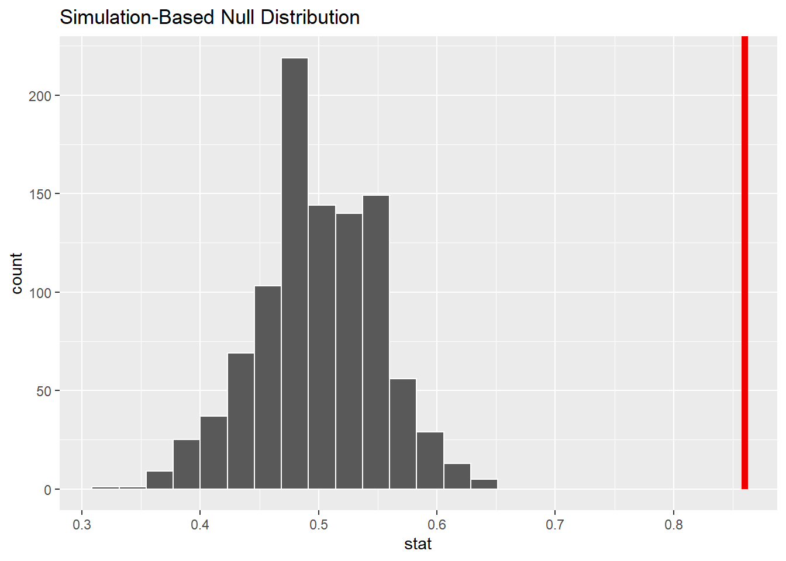

Two Categorical Variables: Case study: CPR and blood thinner
Cardiopulmonary resuscitation (CPR) is a procedure used on individuals suffering a heart attack when other emergency resources are unavailable. This procedure is helpful in providing some blood circulation to keep a person alive, but CPR chest compressions can also cause internal injuries. Internal bleeding and other injuries that can result from CPR complicate additional treatment efforts. For instance, blood thinners may be used to help release a clot that is causing the heart attack once a patient arrives in the hospital. However, blood thinners negatively affect internal injuries.
Here we consider an experiment with patients who underwent CPR for a heart attack and were subsequently admitted to a hospital. Each patient was randomly assigned to either receive a blood thinner (treatment group) or not receive a blood thinner (control group). The outcome variable of interest was whether the patient died within the 24 hours.
Conditions for the sampling distribution to be Normal
– Independence
– Success and failure condition
We use a special proportion called the pooled proportion to check the success-failure condition
p-pooled = Total number of successes (deaths) divided by the Total number of participants in the study
– Report this value below:
p_pool<-(stat_df[1]+stat_df[3])/nrow(cpr)#nrow should be 90
This proportion is an estimate of survival rate across the study if the null hypothesis is true. We then use the following formula to check this condition:
Because we want to look above our statistic and not below!
Why are we multiplying by 2?
Because we have a 2 sided test and are working with a symmetric distribution
Simpler Version: 1 Categorical Variable
Bumba or Kiki
How well can humans distinguish one “Martian” letter from another? In today’s activity, we’ll find out. When shown the two Martian letters, kiki and bumba, answer the poll https://app.sli.do/event/etoay5PwN5Mg5qiYg6BnDf whether you think bumba is option 1 or option 2.
Once it’s revealed which option is correct, please write our sample statistic below:
.86
Let’s write out the null and alternative hypotheses below
Ho: \(\pi\) = 0.5
Ha: \(\pi\) > 0.5
Now, let’s quickly make a data frame of the data we just collected as a class. Replace the … with the number of correct and incorrect guesses.
Now let’s simulate our null distribution by filling in the blanks. Below, detail how this distribution is created?
set.seed(333)null_dist<-class_data|>specify(response =correct_guess, success ="Correct")|>hypothesize(null ="point", p =0.5)|>generate(reps =1000, type ="draw")|>calculate(stat ="prop")
Helpful Hint: Remember that you can use ? next to the function name to pull up the help file!
Set up a “spinner with half of it being correct and half being incorrect; spin it n = 100 times and record the new proportion of correct guesses
Do this above process 1000 times to create a distribution under the assumption of the null hypothesis!
Calculate and visualize the distribution below.
visualize(null_dist)+shade_p_value(.86, direction ="right")
Warning in min(diff(unique_loc)): no non-missing arguments to min; returning Inf

null_dist|>get_p_value(.86, direction ="right")
Warning: Please be cautious in reporting a p-value of 0. This result is an
approximation based on the number of `reps` chosen in the `generate()` step. See
`?get_p_value()` for more information.